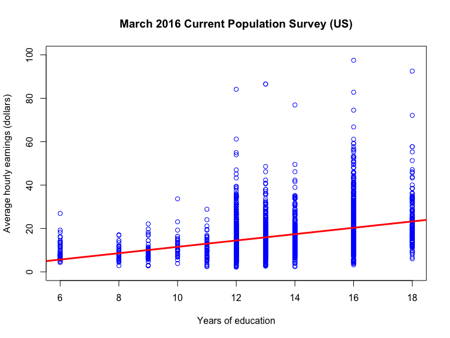
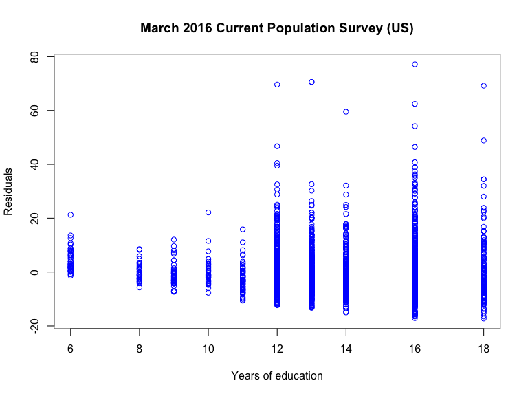

April 22, 2022
Some good advice
Homo- and heteroskedasticity, \(t\)-tests, and CIs
A question from last year’s EC2203 paper
Questions from the audience
The exam is online and takes place May 10 (check your timetable!)
Paper: two problems (each 50 marks) with subquestions
EC calculators are permitted
Relevant statistical tables are attached
You will not be asked to produce code. You will be asked to use and interpret estimated regression models.
The exam is designed to test your understanding of the material. You are expected to think and to use the techniques/methods/topics we have been working with.
Take your time to read and understand the question
Take your time to think about the answer
Do your best to provide precise and concise answers. Verbosity is not rewarded.
Exams involve risk and uncertainty. You need to deal with this. How?
My two cents:
Be well prepared on the day of the exam
Be well rested on the day of the exam
Find people to talk to who can calm you down during revision
View exams as a learning experience
The exam is fair and doable
Noone is trying to trick you, or to put you down. We all want you to succeed \(\Rightarrow\) The exam will be marked fairly
Any one exam is unlikely to have a large impact on your overall grade or degree classification
Population regression model
\[Score_i = \beta_0 + \beta_1 STR_i + u_i; \quad i = 1,\ldots,n\]
OLS estimator of \(\beta_1\):
\[\hat{\beta}_1 = \frac{\sum_{i=1}^n (Score_i - \overline{Score})(STR_i - \overline{STR})}{\sum_{i=1}^n (STR_i - \overline{STR})^2}\]
OLS estimator \(\hat{\beta}_1\) is asymptotically normally distributed:
\[\hat{\beta}_1 \overset{\text{approx}}{\sim} \mathcal{N}\left(\beta_1,\sigma^2_{\hat{\beta}_1} \right)\]
Assume for now that we have estimator of \(\sigma^2_{\hat{\beta}_1}\) denoted \(\hat{\sigma}^2_{\hat{\beta}_1}\)
That is an impossible question to answer with certainty (we observe \(\hat{\beta}_1\), not \(\beta_1\))
It is meaningful to ask whether the data at hand (i.e. the observed value of \(\hat{\beta}_1\)) make it very unlikely that \(\beta_1=0?\)
We answer this question by posing a hypothesis abut the value of \(\beta_1\) and testing it; here (w/ 2-sided alternative),
\[H_0: \, \beta_1 = 0; \quad H_1: \, \beta_1 \neq 0\]
\[\widehat{Score}_i = \underset{(9.468)}{698.9} -\underset{(0.480)}{2.28} STR_i\] \[R^2 = 0.051; \,\, SER = 18.58\]
##
## Call:
## lm(formula = Score ~ STR, data = CASchools)
##
## Residuals:
## Min 1Q Median 3Q Max
## -47.727 -14.251 0.483 12.822 48.540
##
## Coefficients:
## Estimate Std. Error t value Pr(>|t|)
## (Intercept) 698.9329 9.4675 73.825 < 2e-16 ***
## STR -2.2798 0.4798 -4.751 2.78e-06 ***
## ---
## Signif. codes: 0 '***' 0.001 '**' 0.01 '*' 0.05 '.' 0.1 ' ' 1
##
## Residual standard error: 18.58 on 418 degrees of freedom
## Multiple R-squared: 0.05124, Adjusted R-squared: 0.04897
## F-statistic: 22.58 on 1 and 418 DF, p-value: 2.783e-06When \(H_0: \beta_1 = 0\) is true, \(\hat{\beta}_1 \overset{\text{approx}}{\sim} \mathcal{N}(0,\hat{\sigma}^2_{\hat{\beta}_1})\).
The \(t\)-statistic is the OLS estimator standardized with respect to the hypothesized value:
\[t = \frac{\hat{\beta}_1-0}{\hat{\sigma}_{\hat{\beta}_1}} \overset{\text{approx}}{\sim} \mathcal{N}\left(0,1 \right)\]
where \(\hat{\sigma}_{\hat{\beta}_1} = \sqrt{\hat{\sigma}_{\hat{\beta}_1}^2}\) is the standard error of \(\hat{\beta}_1\)
Fix significance level \(\alpha\) (e.g. \(\alpha = 0.05\)) and apply the rule:
Reject \(H_0\) if \(p\)-value \(<\alpha\); otherwise, do not reject \(H_0\),
or equivalently, apply the rule:
Reject \(H_0\) if \(|t| > z_{1-\alpha/2}\), where the critical value \(z_{1-\alpha/2}\) is \((1-\alpha/2)\times 100\) percentile in \(\mathcal{N}(0,1)\)
Note, for \(\alpha = 0.05\), the critical value is \(z_{0.975} = 1.96\)
To compute the \(t\)-statistic we need to know \(\hat{\sigma}_{\hat{\beta}_1} = \sqrt{\hat{\sigma}_{\hat{\beta}_1}^2}\)
The specific formula \(\hat{\sigma}_{\hat{\beta}_1}^2\) depends on the conditional error variance \(\mathrm{var}(u_i|X_i)\) in the population regression model
If \(\mathrm{var}(u_i|X_i)\) does not depend on the regressor value \(X_i\), we say the errors are homoskedastic
If \(\mathrm{var}(u_i|X_i)\) is a function of the regressor value \(X_i\), we say the errors are heteroskedastic
\[AHE_i = \beta_0 + \beta_1 YoEd_i + u_i; \quad i=1,\ldots,n\]

\[\hat{u}_i = AHE_i - \hat{\beta}_0 - \hat{\beta}_1 YoEd_i; \quad i=1,\ldots,n\]

Homoskedasticity-only standard error of \(\hat{\beta}_1\):
\[\hat{\sigma}_{\hat{\beta}_1} = \sqrt{\hat{\sigma}^2_{\hat{\beta}_1}} = \sqrt{\frac{1}{n}\times\frac{\frac{1}{n-2}\sum_{i=1}^n \hat{u}_i^2}{\frac{1}{n-1}\sum_{i=1}^n (X_i - \overline{X})^2}}\]
Heteroskedasticity robust standard error of \(\hat{\beta}_1\):
\[\hat{\sigma}_{\hat{\beta}_1} = \sqrt{\hat{\sigma}^2_{\hat{\beta}_1}} = \sqrt{\frac{1}{n}\times\frac{\frac{1}{n-2}\sum_{i=1}^n (X_i - \overline{X})^2 \hat{u}_i^2}{\left[\frac{1}{n-1}\sum_{i=1}^n (X_i - \overline{X})^2\right]^2}}\]
The heteroskedasticity robust standard error of \(\hat{\beta}_1\) is valid also when errors are homoskedastic
The homoskedasticity-only standard error of \(\hat{\beta}_1\) is valid only when errors are homoskedastic
You should always use heteroskedasticity robust standard errors in applications of regression analysis
\[\widehat{AHE}_i = -\underset{(0.959)}{3.134} + \underset{(0.070)}{1.467} YoEd_i\] \[R^2 = 0.130; SER = 8.769\]
##
## Call:
## lm(formula = earnings ~ education, data = CPSSWEducation)
##
## Residuals:
## Min 1Q Median 3Q Max
## -17.270 -5.355 -1.513 3.194 77.164
##
## Coefficients:
## Estimate Std. Error t value Pr(>|t|)
## (Intercept) -3.13437 0.95925 -3.268 0.0011 **
## education 1.46693 0.06978 21.021 <2e-16 ***
## ---
## Signif. codes: 0 '***' 0.001 '**' 0.01 '*' 0.05 '.' 0.1 ' ' 1
##
## Residual standard error: 8.769 on 2948 degrees of freedom
## Multiple R-squared: 0.1304, Adjusted R-squared: 0.1301
## F-statistic: 441.9 on 1 and 2948 DF, p-value: < 2.2e-16\[\widehat{AHE}_i = -\underset{(0.926)}{3.134} + \underset{(0.072)}{1.467} YoEd_i\] \[R^2 = 0.130; SER = 8.769\]
## Parameter | Coefficient | SE | 95% CI | t(2948) | p
## ---------------------------------------------------------------------
## (Intercept) | -3.134 | 0.926 | [-4.95, -1.32] | -3.385 | < .001
## education | 1.467 | 0.072 | [ 1.33, 1.61] | 20.390 | < .001Thought experiment: test all possible hypothesized values for \(\beta_1\) with 5% significance level, record rejections and non-rejections
Given \(\hat{\beta}_1\) and \(\hat{\sigma}_{\hat{\beta}_1}\), which hypothesized values \(\beta_{1,0}\) for \(\beta_1\) are not rejected?
\[\left| \frac{\hat{\beta}_1-\beta_{1,0}}{\hat{\sigma}_{\hat{\beta}_1}} \right| < 1.96\]
We fail to reject \(H_0: \beta_1 = \beta_{1,0}\) for \(\beta_{1,0}\) in the interval:
\[\hat{\beta}_1-1.96 \times \hat{\sigma}_{\hat{\beta}_1} \leq \beta_{1,0} \leq \hat{\beta}_1+ 1.96\times \hat{\sigma}_{\hat{\beta}_1}\]
A range of \(\beta_1\)-values, all of which are consistent with the estimate \(\hat{\beta}_1\), is called a 95%-confidence interval for \(\beta_1\)
\[CI_{\beta_1,0.95} = \left[\hat{\beta}_1-1.96 \times \hat{\sigma}_{\hat{\beta}_1}, \hat{\beta}_1+ 1.96 \times \hat{\sigma}_{\hat{\beta}_1}\right]\]
\(CI_{\beta_1,0.95}\) is the set of \(\beta_1\)-values that are not rejected by a two-sided \(t\)-test with a 5% significance level
\(CI_{\beta_1,0.95}\) is also a interval that has a 95% coverage probability of containing the true value \(\beta_1\)
Estimated regression model:
\[\widehat{Score}_i = \underset{(10.360)}{698.9} -\underset{(0.520)}{2.28} STR_i\] \[R^2 = 0.051; \,\, SER = 18.58\]
95% confidence interval for \(\beta_1\):
\[\begin{multline*} \bigg[-2.28-1.96 \times 0.52, -2.28+ 1.96 \times 0.52\bigg] \\ = \bigg[ -3.30,-1.26\bigg] \end{multline*}\]